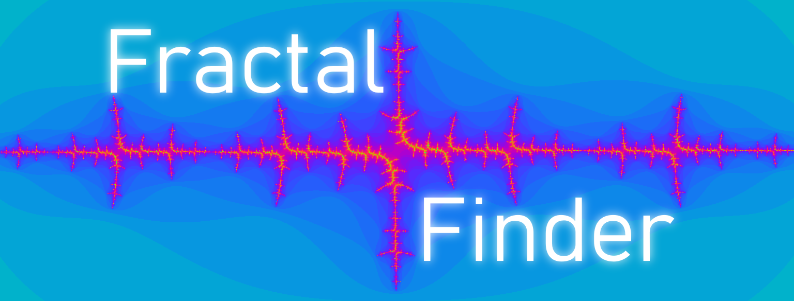

Here are some links to games I've made. The plan is for this list to grow significantly over time!
Star Mining Co.
Use your customisable super-drill to carve your way through asteroids to reveal the riches held within. Use your new-found wealth to buy upgraded parts for even faster destruction! But be careful - failure to make a profit for Star Mining Co. will terminate your contract, and YOU, permanently!
I'm currently working on a rogue-like called Star Mining Co. which you can wishlist now on Steam! I'm making it from scratch in Java using Processing as a library to handle all the graphics and what not.
Playtesting is currently open too, so if you want to try it out for yourself, head over to the Steam page and get involved! Make sure you join my Discord server as well so you can share your feedback.
Older projects
Fractal Finder
Fractal finder is a simple little game of hide and seek. You get given an image somewhere in the fractal and your job is to find where it's hidden.
Cheers, and happy coding!